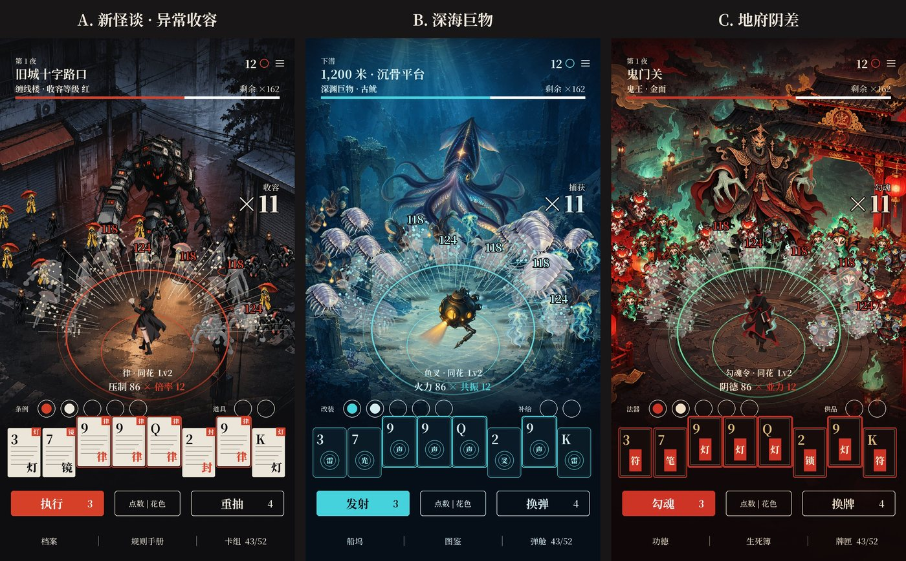
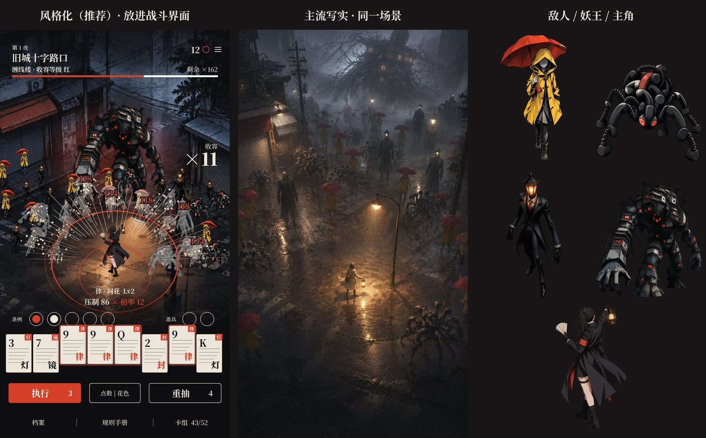
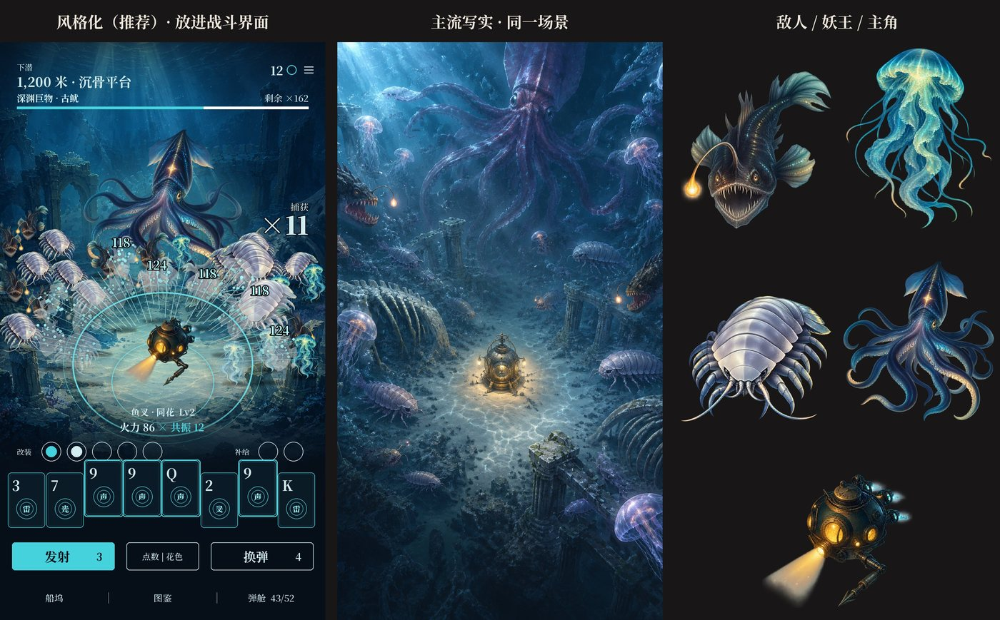
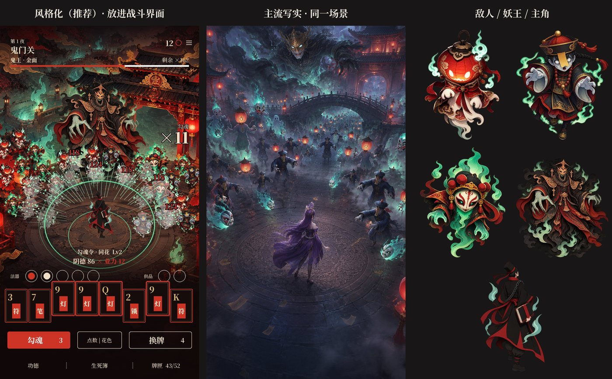
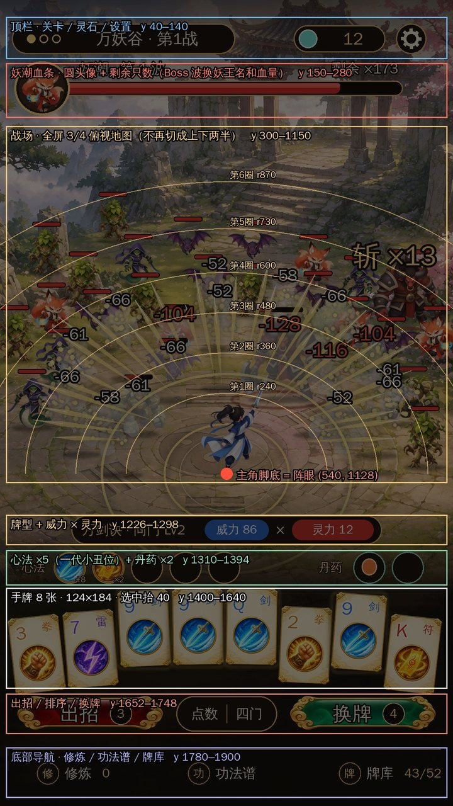
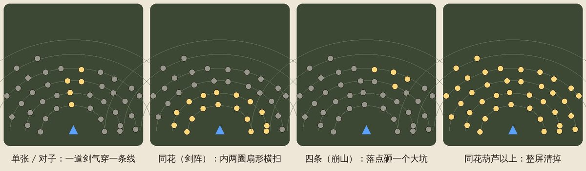
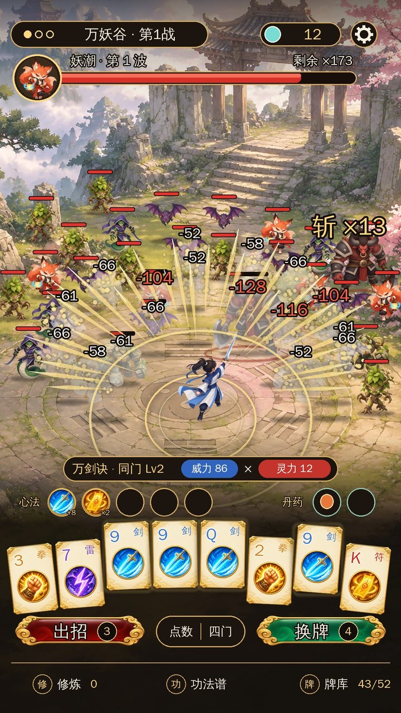
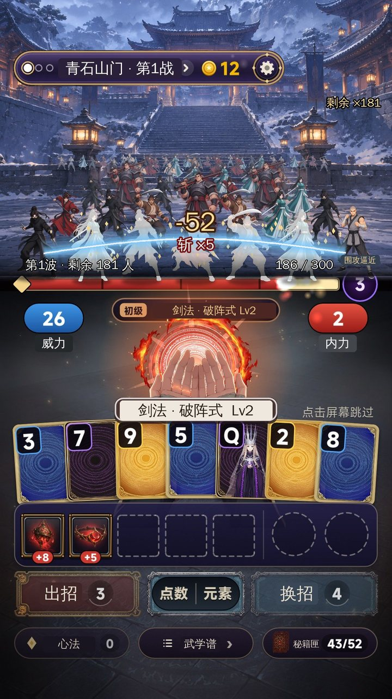

zwluoqi/EmberCards2 里做。research/v2/raw/charts/）；research/v2/keyword-table.md）；steamdb-creater 11-11 表）：团队没有做过这三个题材。docs/v2/img/v4_*。地图、主角、怪物都是团队图片服务（gpt-image-2）这次新出的；界面文字和布局是按第 4 节的规格画上去的。
| A. 新怪谈 · 异常收容（推荐） | B. 深海巨物 | C. 地府阴差 | |
|---|---|---|---|
| 一句话 | 雨夜旧城，异常体从四面八方涌来，你是收容局外勤，一手「规则牌」把它们收进档案 | 驾驶潜水钟往深渊下潜，鱼群和深海怪围着你转，每层尽头是一头巨物 | 新上任的阴差在鬼门关前当班，百鬼夜行涌上来，一手勾魂令全收了 |
| 爆款依据 | 《时序残响》86 万、《元夜十二谈》32 万（预约榜第 29）、《收容：秘密档案》9.6 分；今天新品榜第 6《全球灵异处理总部》、热门榜第 38《异常校园模拟器》9.8 分 | 制造游戏《包鱼塘模拟器：尼斯湖巨物》27 万（休闲榜第 9）；《极境：垂钓者》31 万（预约榜第 15）；「巨物」这个词 1,427 万 | 《我在地府打麻将》42 万、8.8 分，Roguelike 榜第 19（打麻将的肉鸽，和我们「打牌的肉鸽」是最近的一款）；《地府打工魂》11 万 |
| 空位（标题 0 款） | 新怪谈 1,599 万、怪谈肉鸽 582 万 | 深海肉鸽 933 万 | 地府肉鸽 661 万 |
| 新在哪 | 割草品类里没有人做新怪谈；敌人是「日常物件变异」，每一只都是一个梗 | 割草几乎都在陆地上；深海是 360° 包围、天然「越潜越深」的关卡感 | 百鬼夜行天然就是「一大群」；阴差打工的反差幽默 |
| 高级画风 | 图像小说式重黑影 + 一个警示红 | 深渊剪影 + 生物荧光 | 剪纸皮影层叠 + 朱砂金 |
| 风险 | 恐怖尺度要控（怪而不吓） | 卡牌和题材的贴合度最弱（要靠命名） | 民俗鬼神的审核尺度；和 v1 里撤掉的志怪方向接近 |
推荐 A： - 「新怪谈」是三个里空位最大的词（1,599 万关注，标题 0 款）。 - 今天新品榜、热门榜上都有新怪谈的新游在冲，题材正热。 - 收容局的「规则 / 档案 / 条例」和牌、装备天然能对上。 - 画风在 TapTap 一眼就跟国风、二次元拉开。
B 是第二选择：画面最干净、最不挑人、审核最省心。
| 看什么 | 数据 |
|---|---|
| 留存（同一套规则） | 《命运牌：九重奏》次留 22.2%–27.4%，人均 83–110 分钟，团队 135 款里最好 |
| 吸量 | 同一款首页点击率只有 7.8%–8.5%；团队吸量好的都在 16%–25% |
结论：核心循环不动，力气全花在「题材 + 战斗画面」上，正好对准一代的短板（吸量）。

爆款依据
| 游戏 | 数据 | 说明 |
|---|---|---|
| 时序残响 218492 | 86 万关注，8.7 | 新怪谈 + 卡牌战棋，证明「新怪谈 × 卡牌」有人买 |
| 元夜十二谈 808743 | 32 万，9.0，预约榜第 29 | 新怪谈 3D 冒险 |
| 收容：秘密档案 219931 | 16 万，9.6 | 「收容」这个设定的代表作 |
| 全球灵异处理总部 996263 | 5.3 万，8.9，新品榜第 6 | 今天正在冲 |
| 异常校园模拟器 951335 | 13 万，9.8，热门榜第 38 | 今天正在冲 |
世界观： - 雨夜的旧城，日常物件开始「出错」：雨衣、电话、路灯、整栋楼。 - 你是异常收容局的外勤，手里一副空白档案牌：打出一组牌，就是执行一条收容规则。 - 每一夜守一个街区，天亮前把异常潮清掉。
怪物（战斗里的表现）：
| 类型 | 设计 | 在战场上怎么读 |
|---|---|---|
| 小怪 ① 雨衣人 | 无脸、黄雨衣、红伞 | 黄 + 红在暗色地图上最跳，数量最多 |
| 小怪 ② 听筒蛛 | 一团旧电话听筒，卷线当腿 | 低矮、贴地快爬，黑色剪影 |
| 小怪 ③ 路灯人 | 黑西装，头是一盏路灯 | 高瘦，头顶自带光，后排也看得见；兼做精英（放大 1.6 倍 + 红圈） |
| Boss 缠线楼 | 电线杆、电线和一窗窗亮灯的楼拧成的巨物 | 占满上半屏，窗户 = 眼睛；收容等级「红」 |
牌和用词：
名字： 1. 《新怪谈肉鸽：收容失效之夜》（推荐） 2. 《怪谈肉鸽：一手牌收容整座城》 3. 《异常收容局》

爆款依据
| 游戏 | 数据 | 说明 |
|---|---|---|
| 包鱼塘模拟器：尼斯湖巨物 988242 | 27 万，休闲榜第 9 | 制造游戏，「巨物」在制造里已经验证能起量 |
| 极境：垂钓者 949370 | 31 万，8.9，预约榜第 15 | 钓「巨物」 |
| 钓鱼：巨物猎手 765844 | 4.6 万，预约榜第 14 | 同上 |
| 深海奇境 10580 / 深海迷航 757826 | 63 万 / 37 万 | 深海题材的老牌 |
世界观： - 一台老式黄铜潜水钟，从 200 米往一万米下潜。 - 每下一层，围上来的东西更怪、更大；每层尽头是一头「巨物」。 - 关卡天然就是深度表：200 米 → 1,200 米 → … → 10,000 米。
怪物：
| 类型 | 设计 | 在战场上怎么读 |
|---|---|---|
| 小怪 ① 鮟鱇 | 黑身、发光的饵 | 一只一个光点，满屏像星空 |
| 小怪 ② 水母 | 半透明、青色光 | 漂浮，被打中时整只亮起来 |
| 小怪 ③ 大王具足虫 | 白色甲壳 | 剪影最大最亮；兼做精英 |
| Boss 古鱿 | 巨型乌贼，触手张开 | 从深渊里升起，占满上半屏 |
牌和用词： - 四种花色：叉（鱼叉）、雷（电击）、声（声呐）、光（照明弹）； - 威力 × 增幅 → 火力 × 共振；出牌 / 换牌 → 发射 / 换弹； - 斩杀 → 捕获 ×N；装备 → 改装； - 局外是船坞和图鉴（收集巨物，强收集感）。
名字： 1. 《深海肉鸽：下潜一万米》（推荐） 2. 《巨物肉鸽：一手牌捕获深渊》 3. 《深渊潜水钟》
风险： - 生物荧光要控制在「自然的光」，不能做成霓虹。负责人规定过不做赛博霓虹，样张里是暗蓝底 + 少量青光。 - 牌和题材的贴合比 A、C 弱，要靠命名补。

爆款依据
| 游戏 | 数据 | 说明 |
|---|---|---|
| 我在地府打麻将 743961 | 42 万，8.8，Roguelike 榜第 19 | 玩法和我们最近：打麻将的肉鸽（Balatro 一路），题材是地府 |
| 地府打工魂 867801 | 11 万 | 阴差打工的反差梗 |
| 地府传说 306216 | 15 万 |
世界观： - 刚考上编制的小阴差，第一天上班就赶上鬼门关大开、百鬼夜行。 - 手里是一副勾魂令，一手牌勾一片。
怪物：
| 类型 | 设计 | 在战场上怎么读 |
|---|---|---|
| 小怪 ① 灯笼鬼 | 头是红灯笼 | 红色光点成片 |
| 小怪 ② 僵尸 | 官服、符纸、平伸双臂 | 跳着走，喜感 |
| 小怪 ③ 戏面鬼火 | 绿色鬼火 + 白戏面 | 冷色，和红灯笼互补；兼做精英 |
| Boss 金面鬼王 | 黑烟和破袍子、金面具 | 压在鬼门正前方 |
牌和用词： - 四种花色：锁、符、灯、笔； - 威力 × 增幅 → 阴德 × 业力；出牌 → 勾魂；斩杀 → 勾魂 ×N； - 局外 → 功德 / 生死簿。
名字： 1. 《地府肉鸽：阴差一手牌勾尽百鬼》（推荐） 2. 《阴差打工记》 3. 《百鬼夜行：勾魂令》
风险： - 民俗鬼神的审核尺度：不出现真实宗教人物，不写阎王、城隍这类具体神名。 - v1 里我自己列过「东方志怪」又撤掉了，这个方向和它接近。 - 和你否掉的 v3（国风）同属中式，题材新鲜感比 A、B 弱。
v3 页游感的来源（美术总监自查）：
v4 的做法（三个题材通用）：
| 规则 | 做法 |
|---|---|
| 一个题材只用一个强调色 | A 警示红、B 荧光青、C 朱砂红；其余全是暗底和米白 |
| 画面有明暗主次 | 主角脚下最亮，外圈压暗（暗角），视线集中在阵眼 |
| UI 克制 | 去掉所有金边：顶栏只有文字，血条是一根 8 px 的细线，按钮是纯色块 / 细描边，底部导航是纯文字 |
| 字体 | 标题和数字用衬线体（思源宋体），不用粗黑体；概念图里已经换了 |
| 信息降噪 | 小怪不挂血条（精英只加一个脚下的圈），伤害数字只飘暴击，右侧一个大号「收容 ×11」 |
| 牌面跟着题材走 | A 档案卡（骨白纸、黑细框、红角标）、B 暗玻璃卡（青色细线 + 声呐圈）、C 黑漆卡（朱砂边 + 金字） |
| 风格化和主流各给一个 | 每个题材的图里，左边是风格化方案（推荐，放进了战斗界面），中间是主流写实方案（同一场景，AI 整幅出） |


scripts/game/ 不改，742 个测试照旧有效。| # | 改什么 | 动不动规则 | 建议 |
|---|---|---|---|
| T1 | 局外货币按斩杀数给：每 10 只 +1 | 只改局外经济 | 开 |
| T2 | 伤害按牌型分到敌潮上、边算分边倒 | 不动，纯表现 | 开，割草的核心 |
| T3 | 剩余出牌次数 = 敌潮收圈 | 不动，纯表现 | 开 |
| T4 | 超杀奖励（+1 金币，每关最多 +2） | 动经济 | 先关 |
| T5 | 出牌快一点（约 7.5 秒 → 5 秒） | 不动，只改节奏 | 开，要你确认 |
| 阶段 | 内容 | 过关标准 |
|---|---|---|
| 切片 | 新战斗界面 + 第 1 关三波打通，出齐第 1 关美术 | 你扫码认可爽感；真机 40 只同屏帧率稳定；同种子回放测试通过 |
| 正式制作 | 8 关美术、文字换皮、局外、配音 | bot 通关率和一代持平（±2%） |
| 预约 | 商店素材、提审 | 走一代的提审清单 |
目标：首页点击率 ≥ 15%（一代约 8%），次留 ≥ 20%，人均 ≥ 60 分钟。
风险： 1. 战斗界面全部重画：工作量比「血条以下不动」的 v2 大，切片周期要多留时间。 2. 40 只同屏 + 特效的真机帧率：切片第一件事就测。 3. 审核： - A 的恐怖尺度：不出血，不 jump scare，适龄控制在 16+； - C 的民俗鬼神尺度； - 三个题材都不用真实地名。 4. 风格化画风的量产稳定性：样张是 gpt-image-2 一次出的，量产时每个题材要定死一套提示词常量和调色。A 的重黑影风格最容易统一，C 的剪纸层叠最难。
| 版本 | 题材 | 结果 |
|---|---|---|
| v3 | 仙门降妖，照《宗师之上》国风厚涂 | 你否了：题材不新、画风页游感。布局保留 |
| v2 | 武侠，复刻《群侠传：幸存者》，第一人称 5 排 | 布局被 v3 取代 |
| v1 | 末日异能 | 降为备选 |
| v3 仙门降妖 | v2 武侠第一人称 |
|---|---|
 |
 |